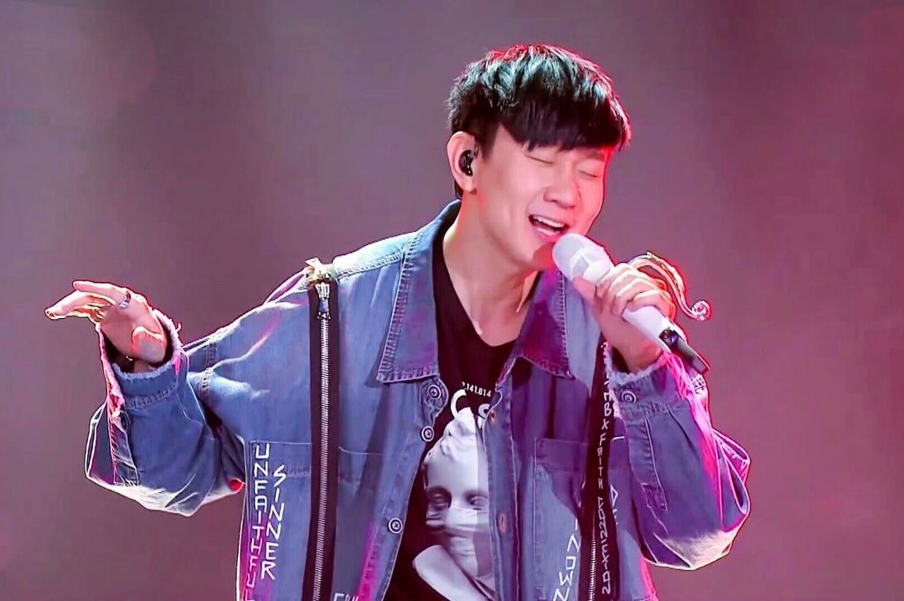

林俊杰
林俊杰，Wayne Lim Jun Jie，艺名：JJ Lin；出生于1981年3月27日。
新加坡华裔男歌手、词曲作家、音乐制作人、品牌潮牌衣服企业人士，
曾拿下金曲奖最佳新人奖以及两届金曲奖最佳男歌手。
演艺生涯
- 2003年，林俊杰发表首张个人专辑《乐行者》并正式出道。
- 2004年凭借歌曲《江南》而成名，并于同年5月8日获得第15届金曲奖之“最佳演唱新人奖”。
- 2004年受邀与陈洁仪合作演唱新加坡国庆庆典主题曲《家》。
- 2007年成立音乐制作公司“就是俊杰音乐”，负责单曲及专辑制作。
- 2011年8月8日，签约华纳音乐。
- 2013年发行《因你而在》专辑，内含《修炼爱情》一曲，并将之拍成动画微电影。
- 2014年6月28日，凭借第十张个人专辑《因你而在》，获得第25届金曲奖最佳国语男歌手奖。
- 2016年6月25日，凭借第十二张个人专辑《和自己对话》，获得第27届金曲奖最佳国语男歌手奖和最佳作曲人奖。
- 2018年《伟大的渺小》入围金曲奖最佳男歌手等。
音乐作品
| 曲目 |
作曲 |
作词 |
备注 |
| 被风吹过的夏天 | 林俊杰 | 冯欣慧 | 《编号89757》中国大陆版之预购赠品单曲 |
| 流行主教 | 林俊杰 | 林宇中 | 《曹操》中国大陆版之预购赠品单曲 |
| 忘记 | 林俊杰 | 林秋离 | 收录于《2006“就是俊杰”世界巡回演唱会》专辑中 |
| 真材实料的我 | 林俊杰 | DR.Moon | 收录于《她说》大陆版 |
| 进阶 | 林俊杰 | 林怡凤 | 2018单曲 |
| 对的时间点 | 林俊杰 | 小寒 | 新加坡樟宜机场的星耀樟宜“雨漩涡”主题曲 |
| 将故事写成我们 | 林俊杰 | 方文山 | 2019单曲,MV特别演出︰吴谨言 |
| Wonderland | 林俊杰 | 张怀秋 | 2019单曲 |
| As I Believe | 林俊杰 | 李迪文 | 2019单曲，对的时间点英文版本 |
| Stay with You | 林俊杰 | 孙燕姿 | 抗击2019冠状病毒病疫情公益歌曲 |
| 交换余生 | 林俊杰 | 易家扬 | 2020单曲、同收录于迷你专辑幸存者 |
荣誉
- 2003，第3届马来西亚金曲红人颁奖典礼－最有潜质新人奖
- 2004，第4届全球华语歌曲排行榜颁奖典礼－年度二十首金曲奖《江南》
- 2005，MusicRadio中国TOP排行榜－港台最受欢迎男歌手奖、港台年度最佳作曲奖《一千年以后》
- 2006，台湾Hito流行音乐奖－新加坡HITO海外歌手奖、HITO十大华语歌曲奖《简简单单》
- 2007，2006年度雪碧中国原创音乐流行榜－港台金曲奖《曹操》
- 2008，第13届新加坡词曲版权协会－最佳本地创作人奖
- 2009，2008年北京流行音乐典礼（中歌榜）－港台年度最佳专辑奖《JJ陆》、年度金曲奖《小酒窝》
- 2010，第10届全球华语歌曲排行榜－年度二十大金曲奖《背对背拥抱》
- 2011，第1届全球流行音乐金榜－年度最佳制作人奖《她说》、年度最佳创作歌手奖、新加坡电台1003推崇大奖、年度20大金曲奖(第几个100天)
- 2012，新加坡e乐大赏－最佳人气本地歌手奖、最佳本地歌手奖、全方位艺人奖
- 2013，东方风云榜20年盛典－亚洲人气歌手奖、华语五强之新加坡最受欢迎歌手奖
- 2014，中华音乐人交流协会－2013年度十大单曲奖《黑暗骑士》
- 2015，第15届音乐风云榜年度盛典－十大金曲奖《可惜没如果》
- 2016，第3届Pensado Awards－最佳外语歌曲奖《不为谁而作的歌》
- 2018，2018年Mnet亚洲音乐大奖－最佳亚洲艺人奖
- 2020，2020 TMEA 腾讯音乐娱乐盛典－年度最佳制作人、年度最佳港台男歌手 十大金曲《将故事写成我们》
- 2021，第1届 PlayMusic Awards－年度十大华语专辑《幸存者》、年度音乐录影带《幸存者》
生活照
